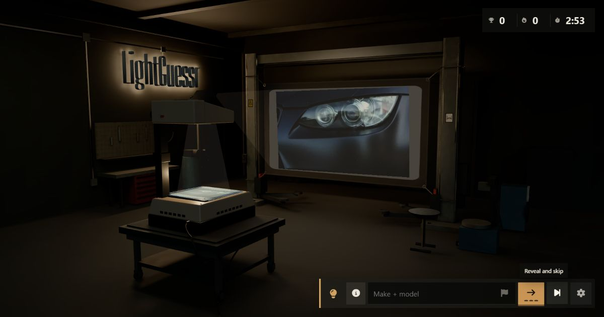

LightGuessr is built around a small, rude question: how well do you actually know cars when almost the entire car is missing? Each round gives you one headlight and asks for the make and model.
I put the whole thing inside a dim 3D garage, with a weirdly evocative overhead projector handling the reveal, because a flat quiz page felt too polite.

There is a browser game and a standalone Windows version. I also built a private workshop for researching, cropping, testing, and publishing the catalog, which is the less glamorous half of maintaining a game whose central joke depends on barely-subclinical car-tism.